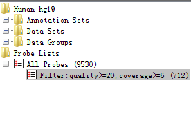
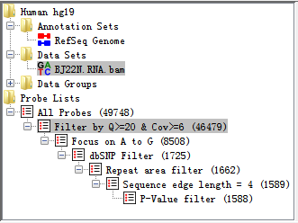
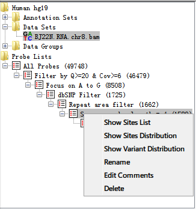

RED---RNA Editing Detector
A program to detect and visualize RNA editing events at the genomic scale using next-generation sequencing (NGS) data
1 Introduction
1.1 What is RED
RNA editing is one of the post- or co-transcriptional processes with modification of RNA nucleotides from their genome-encoded sequence. In human, RNA editing event occurs mostly by deamination of adenosine to inosine (A-to-I) conversion through ADAR enzymes.
RED (RNA Editing Detector) is a program to detect and visualize RNA editing events at the genomic scale using next-generation sequencing (NGS) data. The software intergrates multiple steps to filter spurisous variant sites, and then performs formal statistical tests to identify reliable RNA editing sites. A potential RNA editing site can be visualized in the context of reference genome (/gene).
Fig. 1.1 A screen shot of RED
RED is a Java-based program with Graphic User Interface (GUI), which works on mainstream operating systems (e.g., Windows, Linux and Mac OS X). To make it more efficient, everlasting and faster-saving, we use MySQL database managing system (DBMS) in manuplicating huge NGS data. In addition. In addition, we used functions in R (www.R-project.org) in performing statistical analysis. However, you'll never manipulate R and MySQL when you used RED program. All of the operation relative to R and MySQL is completed by RED automatically. RED enables the analysis of RNA editing events at two levels (illustrated below) using VCF files from different sources and the presentation of full mapped sequence data using BAM file:
- Detection of RNA editing sites using RNA-seq data alone (i.e., De Novo identification)
- Detection of RNA editing events using both DNA-sequencing data (e.g., whole exome sequencing) and RNA-Seq data
1.2 Prerequisites
- Java Runtime Environment (jdk 1.7.0_21 or later)
- MySQL Database Management System (MySQL 5.6.19 or later)
- R Environment (R 3.1.1 or later)
1.3 Installation
1.3.1 Install Java Runtime Environment
Java Runtime Environment (JRE) is basically the Java Virtual Machine (JVM) where your Java programs run on. It also includes browser plugins for Applet execution. Java Development Kit (JDK) is the full featured Software Development Kit (SDK) for Java, including JRE, and the compilers and tools (e.g., JavaDoc, and Java Debugger) to create and compile programs. In order to run RED, we need to install either JRE or JDK.
- JDK:
- JRE:
http://www.oracle.com/technetwork/java/javase/downloads/jdk8-downloads-2133151.html
http://www.oracle.com/technetwork/java/javase/downloads/jre8-downloads-2133155.html
1.3.2 Install MySQL Database
RED stores all data into database so that we can reuse the data for research. MySQL is one of the best choice since it is free and efficient. Although default configuration in MySQL can ensure your server works well, you could edit the configure file to gain better performance. For Linux System, edit the parameters in the file of /etc/my.cnf (default configuration path). For Windows System, you could use MySQL Workbench to configure your server efficiently.
1.3.3 Install R Environment
R is a free software environment for statistical computing and graphics. It compiles and runs on a wide variety of UNIX platforms, Windows and MacOS. To download R, please choose your preferred CRAN mirror. The package of “rJava” in R is required, which ensures connection between R and Java. Open a R Window and type:
install.packages(rJava)
The package will be installed automatically with Internet connection.
1.4 Terminology
There are a few terms used throughout the RED documentation which it is useful to understand before using the program.
1.4.1 Molecular Biology
- RNA Editing
- Reference Genome
- Sequence Alignment Map (.bam/.sam) File
- Variant Calling Format (.vcf) File
RNA editing is one of the post- or co-transcriptional processes with modification of RNA nucleotides from their genome-encoded sequence.
Reference genome is a comprehensive, integrated, non-redundant, well-annotated set of reference sequences including genomic, transcript, and protein (hg19).
SAM format is a text format for storing sequence data in a series of tab delimited ASCII columns, while BAM format stores the same data in a compressed, indexed, binary form.
VCF is a text file format (most likely stored in a compressed manner) which contains meta-information lines, a header line, and then data lines each containing information about a position in the genome.
1.4.2 Program
- Data Set
- Data Group
- Data Store
- Probe/ProbeBean
- Probe Set
- Probe List
A data set stores a set of data, which is imported from a single file. It is an efficient way to be handled and presented. In program, a data set refers to a BAM/SAM file that contains sequence alignment/map information, which is displayed in the context of reference sequence.
A data group contains two or more data sets with different biological conditions to make it compared for some purposes (e.g., comparing RNA editing sites identified in cancer tissues and adjacent normal tissues). In a given data group, we aggregate data sets needed for research and save the results of comparison. This function has not completely worked , and we will try our best to make it come true in the next version.
A data store refers to either a data set or a data group. Most analyses and visualizations in RED operate on data stores and they work equally well with either data sets or data groups.
A probe represents a potential RNA-editing site which contains basic information (e.g., coordinate, and editing base), while a probe bean contains all information derived from .vcf file.
A probe set stores all probes from an initial vcf file, namely stores all RNA-editing sites without using any filter. It is also the root of a pipeline tree when executing any filter to the original probe set. The probe set is produced when a vcf file has been input into database.
A probe list is a subset of the probe set. Probe lists are generated by one or more filters implemented in RED, which store the remaining editing sites after filteration. However, we can produce probe lists from another probe list which had executed one or more filters.
2 Getting Started
2.1 Starting a New Project
Before starting a new project, make sure that you have configured all running environments mentioned in the Prerequisites section. You can either select a genome or connect to MySQL database when starting a new project, but both should be performed to make the program work properly.
2.1.1 Select a Genome
To start a new project, you may first select a new genome of interest. When the program is open, select File > New Project… to select a new genome. If there isn't any genome file in the local host, a warning notification will pop up as the following illustrated and tell you what you should do.

Fig. 2.1 Warning when there is no genome in genome directory
If you choose to download a new genome, click Import New button and find out the new genome you need.
Fig. 2.2 Select a new genome to download
After the download completes, the following dialog of 'Select Genome…' will pop up.
Fig. 2.3 Select a new genome to import
It is noteworthy that it may take a little bit longer when importing genome data into RED for the first time. We have a cache mechanism to make it faster when you reload the same genome. Once you have selected your genome and it has been loaded, you can move on to the next step.
2.1.2 Connecting to MySQL Database
A simple database connection dialog will pop up when you select File > Connect to MySQL… as the following illustrated.
Fig. 2.4 Connect to MySQL DBMS
With successful connection, the program will detect whether there is an database with imported data before and then make a relevant notification for the next step.
- Null in Database
If the database is empty (or null), the program will tell what you need to prepare for data import.

Fig. 2.5 Data import notification

Fig. 2.6 Data import dialog
A simple explanation for each kind of importing file was shown. It helps you locate what kind of data file should be imported when you select browse button.

Fig. 2.7 Importing data
After all the paths have been selected, press Import button and wait for a moment, all the data will be imported to your database.
- Data Which Don't Meet Your Demand in Database
After database is connected using database connection panel, Fig. 2.6 is present by selecting File > Import Data > Database… and you can import another data for further demand.
- Data Which Meets Your Demand in Database

Fig. 2.8 Notification of successful database connection and data loaded to database
If data have been loaded into database system, then you can filter spurisous variants for detecting potential RNA-editing sites.
2.1.3 Loading a BAM/SAM File (using both RNA-Seq and DNA-sequencing data; or only RNA-Seq data)
In order to make a full landscape of all potential RNA-editing sites at the genomic scale, the sequence alignment/map file (BAM/SAM), as well as variant calling format file (VCF), which has been imported to database, is needed. All potential RNA-editing sites will be shown in Chromosome Panel. The program only supports paired-end reads in the current release.
The SAM/BAM format has been well defined in 1.4Terminology section. We provided an option dialog to help import BAM/SAM data so you don't need to specify much information.
Fig. 2.9 An option dialog for importing BAM/SAM file
- Remove duplicate reads
- Minimal mapping quality
Removing duplicate reads (reads of the same length and sequence identity) is a widely used practice to correct bias when analyzing NGS data. Tick if you want to remove. We strongly recommend you remove them because it may influence the result of coverage.
Control the minimum mapping quality when importing data. You can choose to filter some reads in Chromosome Panel when importing data based on their mapping quality scores. The quality score ranges from 0 to 255 (with higher scores being better), and if you set a filter value then only mapped reads with a score above this value will be imported. Not all read mappers will include a score value so depending on where the file you are importing came from this option may have no effect.
2.1.4 Setting filters
Eight kinds of filters have been provided in RED, see Filters section for more detail. Before setting filters, database must be connected successfully. An initial set of RNA-editing sites(ProbeSet) will be present as a root tree named All Probes within Directory Panel. When one filter is executed, a leaf connected to this tree will be generated associated with the remaining RNA-editing sites.
For the tested data, we have imported BJ22.RNA.chr8.snvs.vcf and BJ22.RNA.chr8.snvs.bam file into database which has 9530 candidate RNA-editing sites.

Fig. 2.10 RNA-seq data and potential RNA editing sites within Directory Panel
Then we execute the Basic Filter with quality greater than 20 and coverage greater than 6.
Fig. 2.11 Basic Filter options
After filteration (for a few seconds), there is a subset of editing sites remained and a leaf will be produced within Directory Panel to describe and check what you have filtered out as illustrated below. At the same time, the Genome Panel and Chromosome Panel will present the RNA-editing sites by different colours.
Fig. 2.12 After executing basic filter, a probe list is generated
2.1.5 Reports
For now, we only support exporting editing sites information in text format. In the Directory Panel, right-click the probe list which you want to export, and select Show Sites List, Show Sites Distribution or Show Variant Distribution to make a report. Please see Probe Set and Probe Lists section for more details.
2.2 Opening an Existing Project
To open an existing project, select ‘File > Open Project’ from the main menu. All RED project files use a .red file extension. A RED project stores all of the Data Set, Data Group, Probe Set and Probe List information for your project. It also remembers which data tracks were visible. See Saving a Project section for more details.
Although it stores the name of the genome you were using, it doesn't contain the actual genome data. If you are using RED on a new machine, it will automatically download and install the required genome when you open a project file. If you want to use RED when not connected to a network, you need to ensure that the correct genome has been installed locally. Once downloaded, genomes will be cached on your machine for future use.
3 Visualisation
The main window consists of Toolbar Panel, Directory Panel, Genome Panel, Feature Panel, Chromosome Panel and Status-bar Panel. Shown as following figure and table.
3.1 Main Window
Fig. 3.1 Main window
| Panel | Explanation |
|---|---|
| 1 | Toolbar Panel |
| 2 | Directory Panel |
| 3 | Genome Panel |
| 4 | Feature Panel |
| 5 | Chromosome Panel |
| 6 | Status-bar Panel |
3.2 Toolbar Panel
Fig. 3.2 Toolbar panel
The toolbar is a convenient way to access commonly used functions, which you can also access via the main menu or keyboard shortcuts.
- 
These buttons allow you to change the data tracks between showing just reads, just probes or both reads and probes

This lets you change the data zoom level
These buttons bring up either the Find Feature, or Goto Position search tools
- 
Drag the tag and change the data zoom level.
3.3 Directory Panel
The directory panel gives you a quick overview of your Annotation sets, Data Sets, Data Groups, Probe Set and Probe Lists.
2.1.1 Select a Genome
To start a new project, you may first select a new genome of interest. When the program is open, select File > New Project… to select a new genome. If there isn't any genome file in the local host, a warning notification will pop up as the following illustrated and tell you what you should do.
Fig. 2.1 Warning when there is no genome in genome directory
If you choose to download a new genome, click Import New button and find out the new genome you need.
Fig. 2.2 Select a new genome to download
After the download completes, the following dialog of 'Select Genome…' will pop up.
Fig. 2.3 Select a new genome to import
It is noteworthy that it may take a little bit longer when importing genome data into RED for the first time. We have a cache mechanism to make it faster when you reload the same genome. Once you have selected your genome and it has been loaded, you can move on to the next step.
2.1.2 Connecting to MySQL Database
A simple database connection dialog will pop up when you select File > Connect to MySQL… as the following illustrated.
Fig. 2.4 Connect to MySQL DBMS
With successful connection, the program will detect whether there is an database with imported data before and then make a relevant notification for the next step.
- Null in Database
If the database is empty (or null), the program will tell what you need to prepare for data import.
Fig. 2.5 Data import notification
Fig. 2.6 Data import dialog
A simple explanation for each kind of importing file was shown. It helps you locate what kind of data file should be imported when you select browse button.
Fig. 2.7 Importing data
After all the paths have been selected, press Import button and wait for a moment, all the data will be imported to your database.
- Data Which Don't Meet Your Demand in Database
After database is connected using database connection panel, Fig. 2.6 is present by selecting File > Import Data > Database… and you can import another data for further demand.
- Data Which Meets Your Demand in Database
Fig. 2.8 Notification of successful database connection and data loaded to database
If data have been loaded into database system, then you can filter spurisous variants for detecting potential RNA-editing sites.
2.1.3 Loading a BAM/SAM File (using both RNA-Seq and DNA-sequencing data; or only RNA-Seq data)
In order to make a full landscape of all potential RNA-editing sites at the genomic scale, the sequence alignment/map file (BAM/SAM), as well as variant calling format file (VCF), which has been imported to database, is needed. All potential RNA-editing sites will be shown in Chromosome Panel. The program only supports paired-end reads in the current release.
The SAM/BAM format has been well defined in 1.4Terminology section. We provided an option dialog to help import BAM/SAM data so you don't need to specify much information.
Fig. 2.9 An option dialog for importing BAM/SAM file
- Remove duplicate reads
- Minimal mapping quality
Removing duplicate reads (reads of the same length and sequence identity) is a widely used practice to correct bias when analyzing NGS data. Tick if you want to remove. We strongly recommend you remove them because it may influence the result of coverage.
Control the minimum mapping quality when importing data. You can choose to filter some reads in Chromosome Panel when importing data based on their mapping quality scores. The quality score ranges from 0 to 255 (with higher scores being better), and if you set a filter value then only mapped reads with a score above this value will be imported. Not all read mappers will include a score value so depending on where the file you are importing came from this option may have no effect.
2.1.4 Setting filters
Eight kinds of filters have been provided in RED, see Filters section for more detail. Before setting filters, database must be connected successfully. An initial set of RNA-editing sites(ProbeSet) will be present as a root tree named All Probes within Directory Panel. When one filter is executed, a leaf connected to this tree will be generated associated with the remaining RNA-editing sites.
For the tested data, we have imported BJ22.RNA.chr8.snvs.vcf and BJ22.RNA.chr8.snvs.bam file into database which has 9530 candidate RNA-editing sites.
Fig. 2.10 RNA-seq data and potential RNA editing sites within Directory Panel
Then we execute the Basic Filter with quality greater than 20 and coverage greater than 6.
Fig. 2.11 Basic Filter options
After filteration (for a few seconds), there is a subset of editing sites remained and a leaf will be produced within Directory Panel to describe and check what you have filtered out as illustrated below. At the same time, the Genome Panel and Chromosome Panel will present the RNA-editing sites by different colours.
Fig. 2.12 After executing basic filter, a probe list is generated
2.1.5 Reports
For now, we only support exporting editing sites information in text format. In the Directory Panel, right-click the probe list which you want to export, and select Show Sites List, Show Sites Distribution or Show Variant Distribution to make a report. Please see Probe Set and Probe Lists section for more details.
2.2 Opening an Existing Project
To open an existing project, select ‘File > Open Project’ from the main menu. All RED project files use a .red file extension. A RED project stores all of the Data Set, Data Group, Probe Set and Probe List information for your project. It also remembers which data tracks were visible. See Saving a Project section for more details.
Although it stores the name of the genome you were using, it doesn't contain the actual genome data. If you are using RED on a new machine, it will automatically download and install the required genome when you open a project file. If you want to use RED when not connected to a network, you need to ensure that the correct genome has been installed locally. Once downloaded, genomes will be cached on your machine for future use.